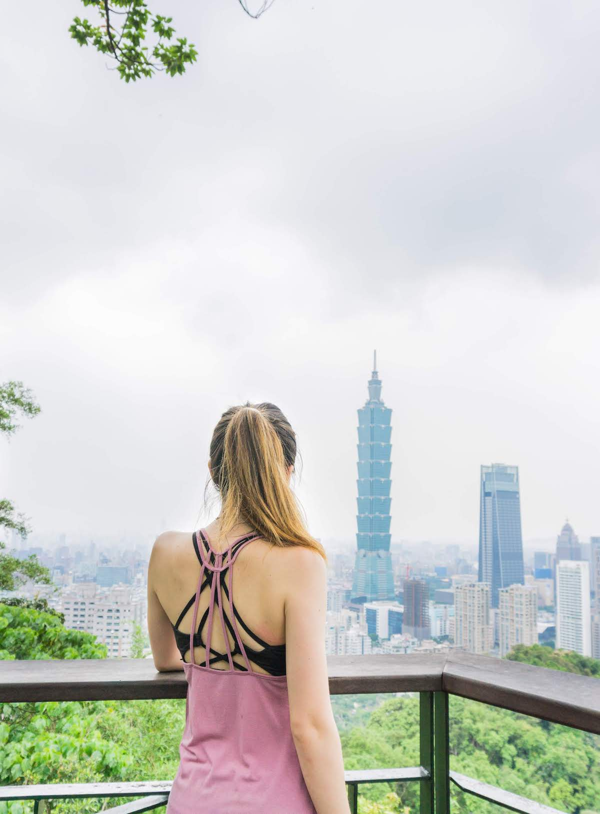
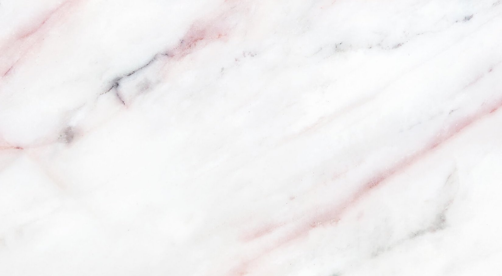

Taiwan: a review of my trip to the motherland
May 20, 2018. I stepped out of the Taiwan Taoyuan International Airport and thought to myself as a wave of hot, humid air greeted my lungs - wow, 7 years. The last time I stepped foot on this beautiful island was 7 years ago, with my arm around my mom's and my brother besides me as we waited for our ride into the city. This time however, it was just me and my slightly overweight 50.6 pound suitcase that just barely made it on the plane 14 hours prior.
Ever since my siblings and I were young, my parents had worked hard to foster a deep, strong relationship between their hometown and their children. Walking along the streets of Taipei, I could almost see my ten year old self running into 7-Eleven to escape the heat on a hot day, saying thank-you to the nice lady who sells soymilk and fried dough sticks - a popular taiwanese breakfast - on the corner of the street as she hands me my order, and proudly carrying the bag of goldfish I scooped from the nightmarket.
This time arond, I spent over a month in Taipei. Although much (or most!) of that time was exploring the many food stalls and restaurants Taipei had to offer, I've highlighted below some of my most loved and adored places to visit in the city.
1. Elephant mountain
This gem in the bustling city offers one of the most AMAZING views of Taipei. And if good views aren't enough to make you want to hike, it's a short 5-10 minute walk from the MRT (Taipei's metro system), 100% free entry, and ONLY a 20-minute hike to the top! Elephant Mountain, also known formally as "Xiangshan Hiking Trail", is very family-friendly, and can get pretty packed on the weekends. The trail is mainly stairs - instead of slanted, uphill ground - so it's also perfect if you're not in the right footwear as I was wearing sandals. However, I would recommend bringing a bottle of water - even though most of the hike is covered in shade - it can get pretty steep with all the stairs!
There are multiple rest stops and viewpoints along the trail to take a break and admire the city views. One of my favorite viewpoints was where the photo above was taken. There's a part of the trail where you'll encounter large boulders and see huge crowds of people climbing them for pictures - you can't miss it! In my opinion, sitting atop the rocks is the best place to snap that perfect photo of you with the city skyline in the background.
2. Ximending: Wanhua District
Located in the historic Wanhua District of Taipei, Ximending is a shopping haven with endless fashion clothing shops, restaurants, street food stalls, and bars. As one of the most popular tourist destinations, I've seen and heard the local stories of tourists who buy empty suitcases to lug around the different shops and fill them up with clothes, shoes, souvenirs, you name it. Nevertheless, the area is a popular spot among both tourists and locals.
Now anyone who knows me also knows that I have a hard time resisting cute clothes and shoes! During my month-long trip, I probably made my way through exit 6 of the Ximen station into the heart of this pedestrian shopping neighborhood eight different times. But let me tell you about the treasures you can find here if you dig carefully! I found that most of the clothing shops carried clothing that did not quite fit my American style of dress. However, there are so many shops that whenever I saw something cute on the display mannequins, I walked in for a quick look. Most of the time, my shopping haul consisted of a couple cute tops that I found for less than $10 USD (don't forget - the key here is the BARGAIN BARGAIN BARGAIN)!
On the other hand, let me speak a little bit to the shoe stores in Ximending. First thing I noticed as I was browsing the many shoe stores was how similar - if not exactly the same - each shoe store was to the one I just walked into a couple minutes ago down the street. Not only are the shoes they sell identical across stores, prices are relatively the same as well (therefore bargaining didn't do much for me in this case). Given this, my tip for anyone who is on a time constraint when shopping at Ximending is to save your time by only visiting two or three of the many shoe stores, and instead saving the time to explore the many other stores and restaurants the area has to offer.
Last, but definitely not least, I can't end my Ximending recommendation without a quick overview of the amazing food here! At one of the busy street intersections, you'll find a food stand called "Hot-Star Large Fried Chicken". They have the biggest fried chicken cutlets I've ever seen, and the chicken is always tender, juicy and flavorful with the perfect amount of spice. When you're here, make sure to keep your eye out for the bright-orange tea cart on the left. Protip: if you buy a fried chicken cutlet, they give you a coupon for a slight discount on the tea (as of May 2018)!
One more of my favorite Taiwanese street foods to get whenever I'm in the Ximending area: Ay-Chung Flour Rice Noodles. There is almost ALWAYS a crowd when I go, no matter the time of day. Take note that there are no tables or seating space here, so most people order at the counter, get their bowl of noodles, and start eating right there in the middle of the street (hence the constant crowd). What is it exactly, you ask? The bowl of noodles simply consists of rice flour noodles in a goopy soup base made with bonito flakes - Japanese smoked skipjack tuna flakes - and topped with cilantro. Within the bowl, you will also find bits of perfectly chewy pig intestines that fall perfectly in line with the soft texture of the noodles. Plus, you can also add in as much self-serve condiments including garlic, vinegar, and chili sauce to your liking!
Out of the endless restaurants and food stalls around this popular area in Taipei, you'll never find yourself hungry. But if you're ever tired from shopping and wishing to try some of the more famous food in the area, be sure to consider my suggestions!
3. Nightmarkets
Oh where do I even start with nightmarkets in Taiwan. From the northern part of the island - Taipei - to the southern part - KaoHsiung - nightmarkets are a defining factor of Taiwan's culture.
Food (separate post) boba places must-try food 